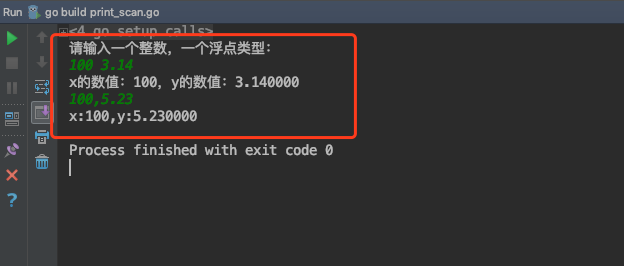
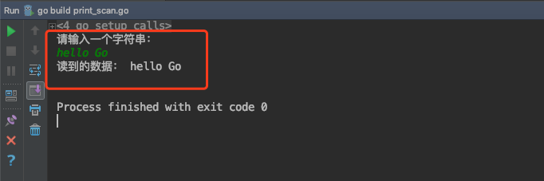

键盘输入和打印输出
作者：小明
出处：千锋教育
一、打印输出
1.1 fmt包
fmt包实现了类似C语言printf和scanf的格式化I/O。格式化verb（'verb'）源自C语言但更简单。
详见官网fmt的API：https://golang.google.cn/pkg/fmt/

1.2 导入包
import "fmt"
1.3 常用打印函数
打印：
func Print(a ...interface{}) (n int, err error)
格式化打印：
func Printf(format string, a ...interface{}) (n int, err error)
打印后换行
func Println(a ...interface{}) (n int, err error)
格式化打印中的常用占位符：
格式化打印占位符：
%v,原样输出
%T，打印类型
%t,bool类型
%s，字符串
%f，浮点
%d，10进制的整数
%b，2进制的整数
%o，8进制
%x，%X，16进制
%x：0-9，a-f
%X：0-9，A-F
%c，打印字符
%p，打印地址
。。。
示例代码：
package main
import (
"fmt"
)
func main() {
a := 100 //int
b := 3.14 //float64
c := true // bool
d := "Hello World" //string
e := `Ruby` //string
f := 'A'
fmt.Printf("%T,%b\n", a, a)
fmt.Printf("%T,%f\n", b, b)
fmt.Printf("%T,%t\n", c, c)
fmt.Printf("%T,%s\n", d, d)
fmt.Printf("%T,%s\n", e, e)
fmt.Printf("%T,%d,%c\n", f, f, f)
fmt.Println("-----------------------")
fmt.Printf("%v\n", a)
fmt.Printf("%v\n", b)
fmt.Printf("%v\n", c)
fmt.Printf("%v\n", d)
fmt.Printf("%v\n", e)
fmt.Printf("%v\n", f)
}
运行结果：

二、键盘输入
2.1 fmt包读取键盘输入
常用方法：
func Scan(a ...interface{}) (n int, err error)
func Scanf(format string, a ...interface{}) (n int, err error)
func Scanln(a ...interface{}) (n int, err error)
package main
import (
"fmt"
)
func main() {
var x int
var y float64
fmt.Println("请输入一个整数，一个浮点类型：")
fmt.Scanln(&x,&y)//读取键盘的输入，通过操作地址，赋值给x和y 阻塞式
fmt.Printf("x的数值：%d，y的数值：%f\n",x,y)
fmt.Scanf("%d,%f",&x,&y)
fmt.Printf("x:%d,y:%f\n",x,y)
}
运行结果：

2.2 bufio包读取
https://golang.google.cn/pkg/bufio/
bufio包中都是IO操作的方法：
先创建Reader对象：

然后就可以各种读取了：

示例代码：
package main
import (
"fmt"
"os"
"bufio"
)
func main() {
fmt.Println("请输入一个字符串：")
reader := bufio.NewReader(os.Stdin)
s1, _ := reader.ReadString('\n')
fmt.Println("读到的数据：", s1)
}
运行效果：

千锋Go语言的学习群：784190273
对应视频地址：
https://www.bilibili.com/video/av56018934
https://www.bilibili.com/video/av47467197
源代码：